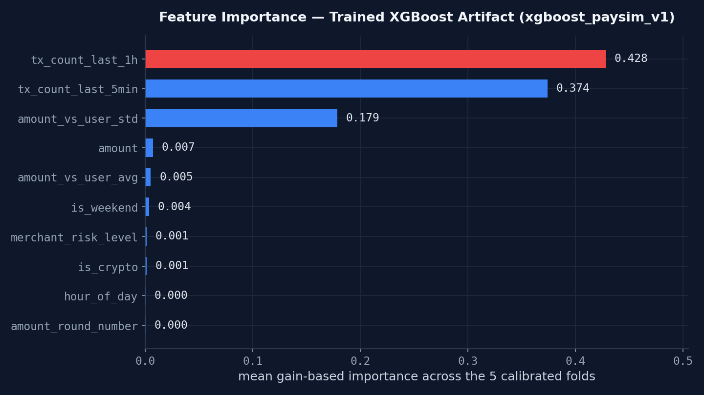
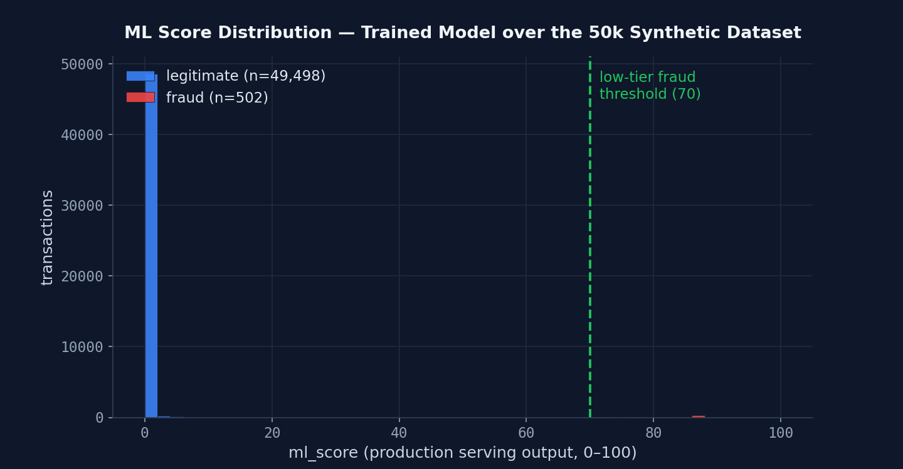

XGBoost on Ten Features
Opening the trained artifact: features, hyperparameters and the discipline behind them.
The ML layer learns what rules cannot express: non-obvious combinations of amount, rhythm, geography and category that separate fraud from legitimate spending.
Feature engineering: where the domain knowledge lives
Raw inputs (amount, timestamp, merchant) are transformed into ten features that expose behavioral signal to the model:
| Feature | What it captures |
|---|---|
| amount | raw transaction amount |
| amount_vs_user_avg | how many times larger than this user's average spend |
| amount_vs_user_std | z-score vs the user's spending deviation — "is this abnormal FOR THIS USER?" |
| tx_count_last_5min | burst velocity, 5-minute window |
| tx_count_last_1h | sustained velocity, 1-hour window |
| hour_of_day | temporal position — fraud concentrates at night |
| is_weekend | weekend flag — spending patterns differ |
| merchant_risk_level | high-risk category flag (crypto, gambling…) |
| is_crypto | cryptocurrency flag — irreversible payments |
| amount_round_number | round amounts correlate with manual testing of stolen cards |
The relative features (amount_vs_user_avg, _std) matter most:
$2,000 is unremarkable for one user and alarming for another. Normalizing against each
user's own baseline lets a single model serve everyone.
Why XGBoost?
- Supervised signal: trained on labeled fraud (~1% prevalence), it optimizes directly for separating the classes — unlike anomaly detectors such as Isolation Forest, which only know "this looks unusual".
- CPU-friendly latency: tree inference is microseconds — compatible with real-time scoring, no GPU serving infra needed.
- SHAP-native: its tree structure plugs directly into
TreeExplainerfor exact per-prediction attributions (Chapter 6). - Tabular king: on small-to-medium tabular data, gradient-boosted trees remain the state of the art versus deep learning.
Taming the probability curve
XGBoost's raw probability is compressed toward 0.5 under class imbalance. The system applies a cubic smoothing before scaling to 0–100, so only confident predictions score high while mid-range uncertainty stays mid-range instead of producing false alarms:
ml_score = clip(smoothed, 0, 1) × 100
If the model file is missing, the layer returns ml_score = 0 and the system
keeps scoring with rules + context. Degradation is explicit, never a crash.
Inside the trained artifact
The production model is a CalibratedClassifierCV wrapper around five
sigmoid-calibrated XGBoost folds — its own hyperparameters tell the training story:
| Hyperparameter | Value | What it means |
|---|---|---|
| n_estimators | 200 × 5 | boosted trees per fold; the calibrated ensemble averages five of them |
| max_depth | 4 | shallower trees than the first attempt — capacity traded for generalization |
| learning_rate | 0.1 | conservative step size per tree |
| subsample | 0.7 | row sampling per tree — built-in randomness |
| colsample_bytree | 0.7 | column sampling per tree |
| reg_alpha | 1.0 | L1 regularization pushing uninformative split gains to zero |
| reg_lambda | 2.0 | L2 regularization smoothing leaf weights |
| calibration | sigmoid, cv=5 | each fold’s probabilities are remapped so predict_proba means what it says |
| scale_pos_weight | ≈ 19.7 | matched to this dataset’s real 4.84% fraud rate — not an assumed ~1% |

xgboost_paysim_v1.joblib (mean gain across the five calibrated
folds; regenerated from the current artifact after the aligned retrain). Three features
carry essentially all the signal: sustained 1-hour velocity (42.8%), 5-minute burst
velocity (37.4%) and amount relative to the user’s own history (17.9%). The
near-zero features are not mistakes: their information largely overlaps with what the
rule layer already expresses, so gradient boosting found little marginal gain left to
extract.Training discipline
- No leakage: SMOTE oversampling is applied strictly on the training split, never before it.
- Realistic noise injection: fraud amounts get ±15% variance, 3% of fraud merchants receive name typos, timestamps jitter ±30 min — deliberately teaching the model that fraudsters don't repeat exact patterns.
- Stratified splits: the ~1–5% fraud ratio is preserved across train/test.
- Cost-sensitive evaluation: a missed fraud (false negative) is priced at 10× a false alarm, and the decision threshold is chosen to minimize expected economic cost rather than raw accuracy.

FeatureEngine plus the trained artifact over all 50k synthetic
transactions, then applying the exact cubic-smoothing formula used in serving. Medians:
26.3 legitimate vs
73.7 fraud — a 47.5-point gap. Honest caveat: these
scores come from the model's own training dataset, so separation here is optimistic
relative to truly unseen traffic; drift monitoring (Chapter 8) exists precisely to catch
that gap in production.Dataset provenance & honest hyperparameters
Where the data comes from. The current artifact trains on the repository’s
synthetic generator (50k transactions, ~5% fraud rate) with a documented mapping path to PaySim
when that file is present. There is no dataset versioning yet (no DVC-style pinning); the CSV in
data/ acts as the de-facto snapshot. A proper data card is on the roadmap.
How the hyperparameters were chosen. Radical honesty: the original
artifact was tuned by hand and misconfigured — its scale_pos_weight
near 100 assumed a ~1% fraud rate while this dataset’s real rate is 4.84%, so a fraud
example was weighted like ~100 legitimate ones when it should weigh like ~20. That artifact
has been replaced by a reproducible retrain through scripts/train_xgboost_aligned.py,
which routes training through the exact production FeatureEngine so train-time
and serving-time features cannot diverge; the script is committed next to the artifact.
What is still true: no grid search or Optuna study picked these values — a randomized
search remains queued as roadmap work, and the next chapter shows why even perfect
parameters cannot rescue unrealistic data.
Reproduce it: scripts/train_xgboost_aligned.py (full documented
pipeline), notebooks/01-paysim-fraud-detection.ipynb (exploration).